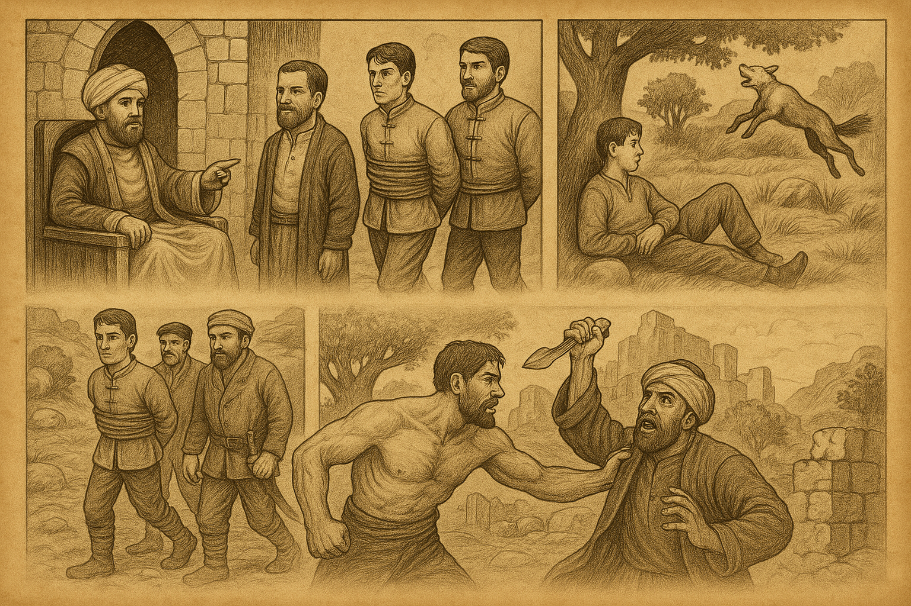

Family History
ΤΑ ΤΡΙΑ ΑΔΕΛΦΙΑ ΤΣΙΟΥΤΣΙΑΣ η ΚΑΣΙΜΗΣ
Τους καλεσε ο αγας να πανε στο σπιτι του στο καστρο του Μηλα.
Πηγε μονο ο πρωτος και ο δευτερος. Τους επιασε ο αγας και τους εβγαλε απο μια σφερτσα απο το σβερκο εως την ουρα και τους αφησε.
Ο πρωτος αδελφος πεθανε απο αιμοραγια πριν φτασει στο Κουβελα οπου ζουσαν.
Ο δευτερος δεν πεθανε απο αυτο, αλλα απο μολυνση. Τον δαγκωσε ενας αγριογατος χρονια αργοτερα οταν κουβαλαγε μια αγελαδα που ειχε κλεψει και σταθηκε να πιει νερο σε μια πηγη. (απο αυτο καταγεται ο Γιωργακης ο κοντοβουνισιος)
Ο τριτος αδελφος κοντος και γεροδεμενος σκοτωσε τον αγα για εκδικηση. Απο αυτον καταγομαστε εμεις.
